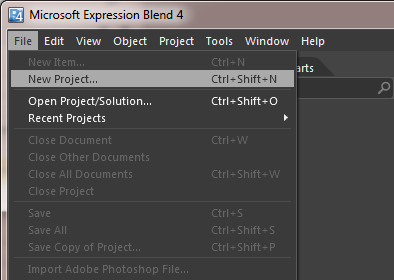
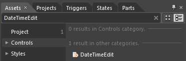
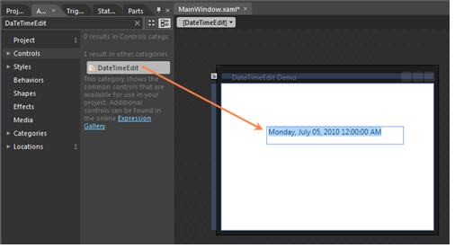

The steps to create a DateTimeEdit control in the application by using Expression Blend are as follows:
1. Open Expression Blend.
2. On the File menu, select New Project. This opens the New Project dialog box.

Figure 272: Expression Blend – Open New Project
3. In the Project types panel, select WPF Application and then click OK.

Figure 273: New Project panel
4. Add the following reference with the sample project:
· Syncfusion.Shared.WPF.dll
5. On the Window menu, select Assets. This opens the Assets Library dialog box.
6. In the Search box, type DateTimeEdit. This displays the search results.

Figure 274: Assets
7. Drag the DateTimeEdit control to Design View.

Figure 275: Expression Blend – Design View
|
XAML |
|
<Window x:Class="WpfApp.MainWindow" xmlns="http://schemas.microsoft.com/winfx/2006/xaml/presentation" xmlns:x="http://schemas.microsoft.com/winfx/2006/xaml" Title="DateTimeEdit Demo" Height="280" Width="365" xmlns:syncfusion=" clr-namespace:Syncfusion.Windows.Shared;assembly=Syncfusion.Shared.Wpf" xmlns:local="clr-namespace:WpfApp"> <Grid x:Name="LayoutRoot"> <syncfusion:DateTimeEdit Height="29" Margin="75,71,50,0" VerticalAlignment="Top"/> </Grid> </Window> |

Figure 276: DateTimeEdit
See Also
Creating a DateTimeEdit control by using C#
Creating a DateTimeEdit control in XAML